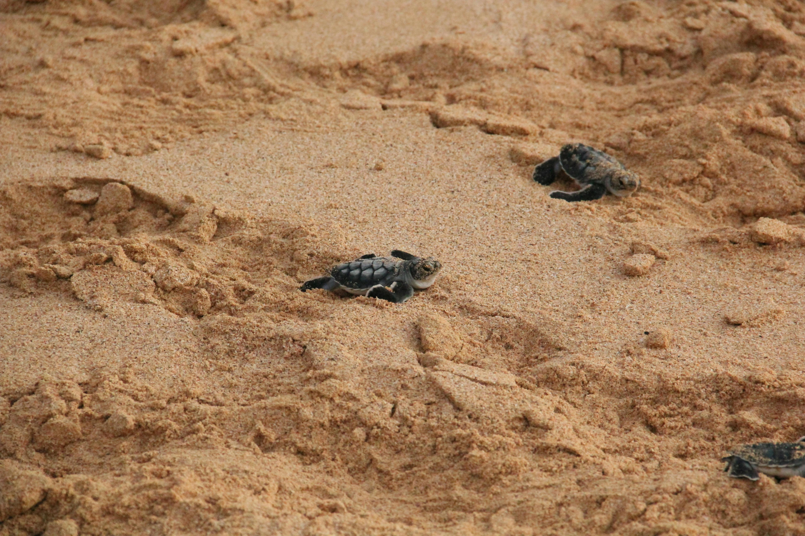

Witness the incredible conservation efforts to protect endangered sea turtles and learn how you can help their survival.
Kosgoda is famous globally for its community-led sea turtle conservation projects. Hatcheries along this stretch of coast work to increase the survival rates of baby turtles by collecting eggs from vulnerable beach nests, hatching them in protected areas, and releasing the hatchlings into the ocean.
Visitors can learn about the five different species of turtles that nest in Sri Lanka (Green, Olive Ridley, Loggerhead, Leatherback, and Hawksbill). You can see rehabilitated adults and, if you're lucky, participate in the release of baby turtles into the sea as the sun sets - a truly unforgettable experience.
Back to Bentota Hub